Quiet software is not empty software.
Clarity is a feature: fewer interruptions, more room for the work itself.
INDEPENDENT DEVELOPER · COPENHAGEN
Apps, systems, and field notes made with care.
I build native Apple tools, calm interfaces, and reliable systems for people who care how software feels.
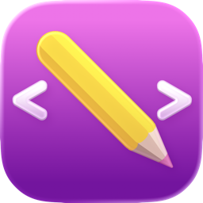
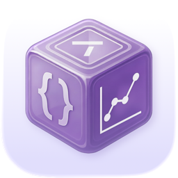
Metrics Data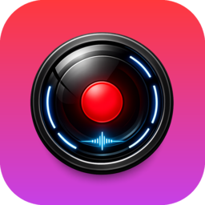
Liquid Record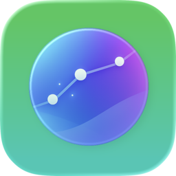
Vistral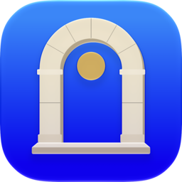
History Vision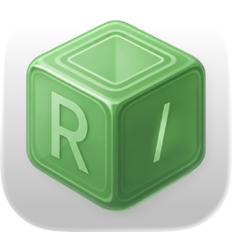
Release Assistant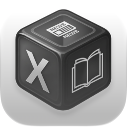
X-Newsbook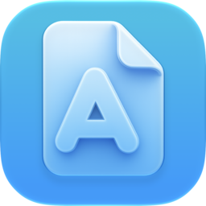
Image Sorter10 apps, from released tools to work in progress. Browse all apps ↗
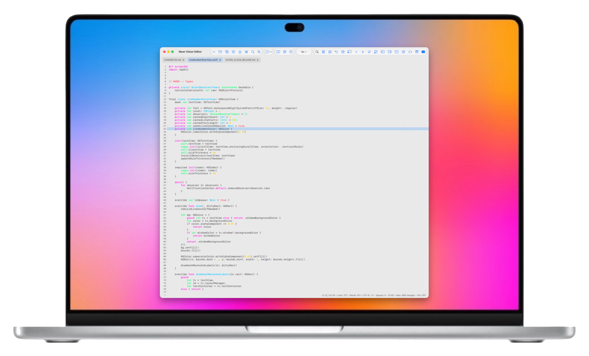
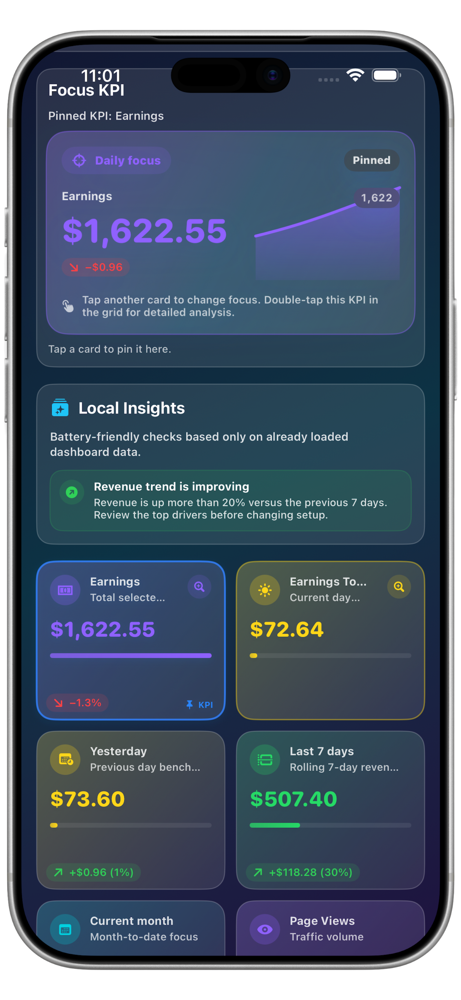
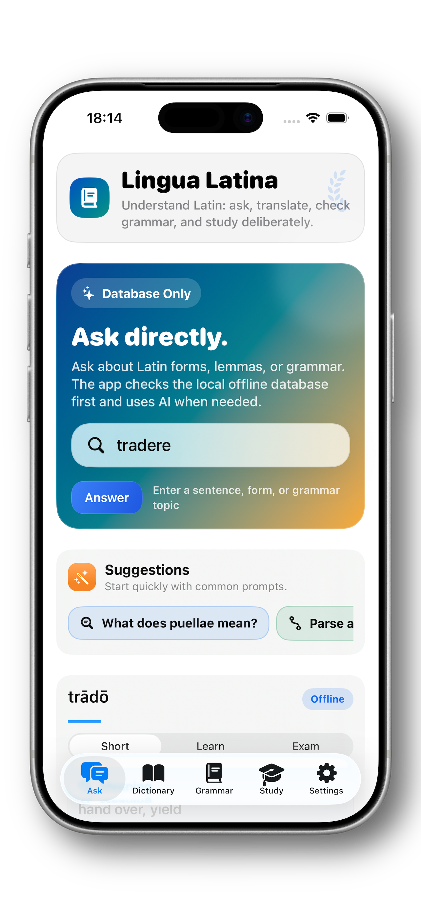
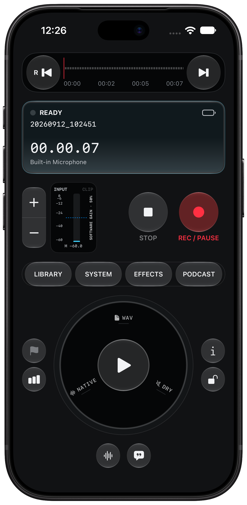
SELECTED WORK
04 SELECTED · 01 DAILY FEATUREIndependent Apple apps, field notes, and developer infrastructure
—each made to be useful, legible, and built to last.
A lightweight, native code and Markdown editor built for speed, readability, and a quiet workspace.
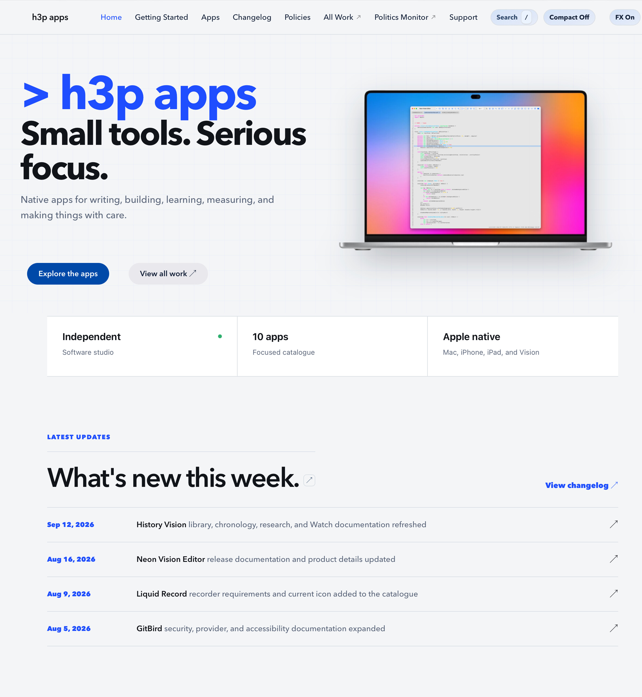
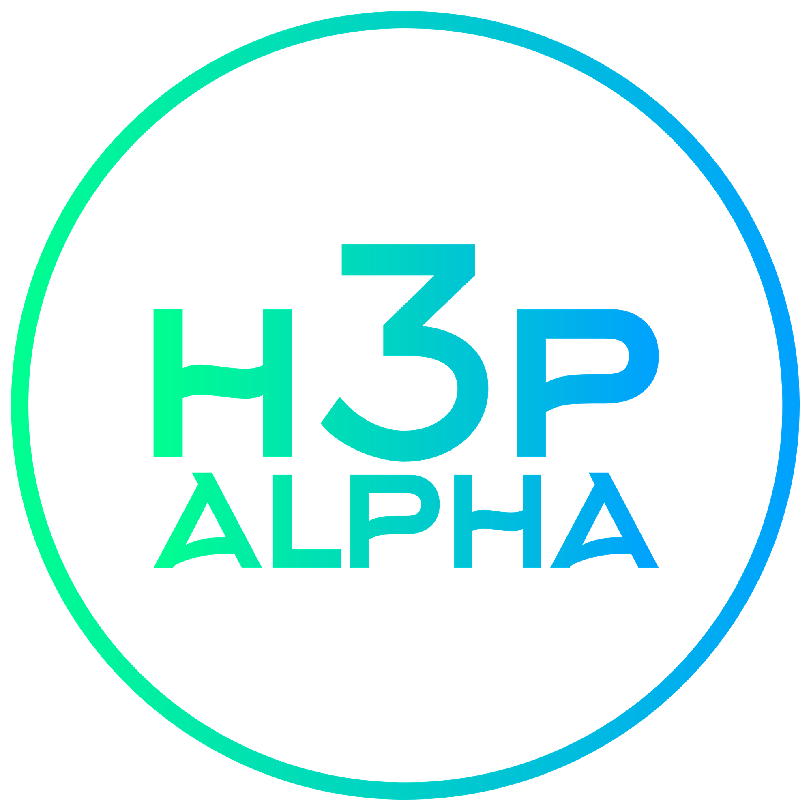
A focused home for app documentation, setup guides, release notes, and support materials.
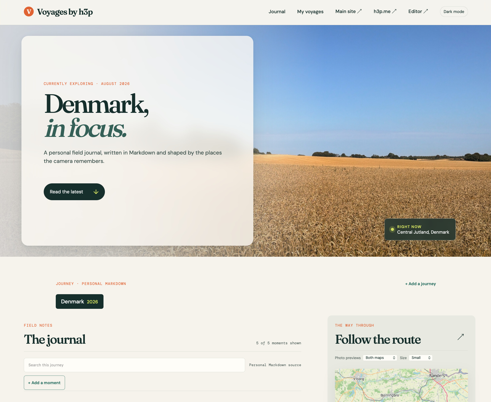
A living travel journal where writing, photographs, and place meet in one readable interface.
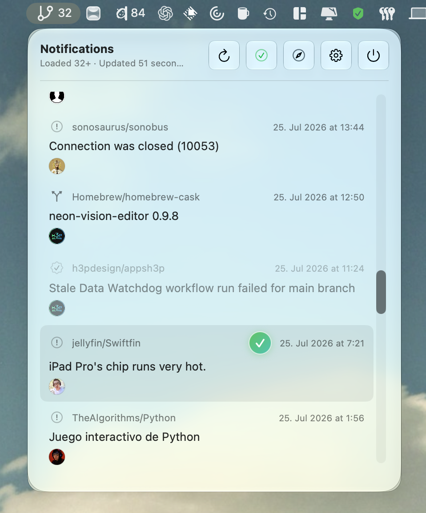
A focused menu bar companion for GitHub and GitLab notifications, designed to stay out of the way.

A quiet Latin companion for translation, grammar, and offline study.
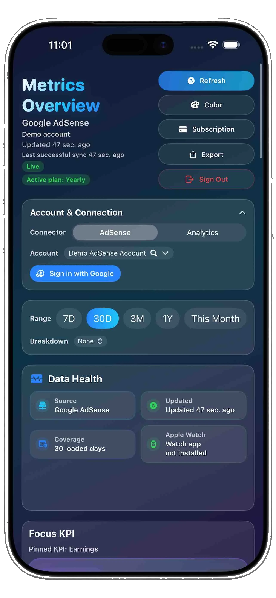
A focused AdSense and GA4 KPI dashboard for daily publisher decisions.
An offline-first iPhone field recorder for WAV capture, playback, and export.
REPOSITORY REGISTER
PUBLIC · ACTIVE · MAINTAINEDA focused index of public repositories I own or actively maintain. Forks, private projects, and inactive mirrors are intentionally left out.
APPS
SHIPPING SOFTWAREOPEN SOURCE & TOOLING
PUBLIC INFRASTRUCTUREDISTRIBUTION & PORTFOLIO
PUBLIC SURFACESA LITTLE CONTEXT
h3p / 2026I’m h3p, an independent developer making software across Swift, SwiftUI, AppKit, UIKit, Python, and the web. My work sits at the intersection of product design and engineering: tools that are capable without becoming complicated.
Each project starts with a practical friction—too much complexity, too little clarity, or a workflow that deserves a calmer tool—and is shaped into something people can trust for the long term.
I care about responsive interfaces, explicit privacy, reliable release workflows, and the small details that make a product feel considered.
More about the work on GitHub ↗SELECTED NOTES
SMALL ARGUMENTS · IN PROGRESSClarity is a feature: fewer interruptions, more room for the work itself.
A considered update makes its changes understandable before anyone installs it.
Useful systems should make their sources, limits, and reasoning easier to inspect.
Good utilities do less on purpose—and do it with care.
CURATED INDEX
HOMES · WRITING · LIVE PROJECTSHOMES
SITES & DOCUMENTATIONWRITING
ESSAYS & FIELD NOTESTOOLS / LIVE PROJECTS
PUBLIC UTILITYSUPPORT INDEPENDENT DEVELOPMENT
h3p apps are developed independently. Support helps fund testing, documentation, reliable releases, and long-term care across Apple platforms.
Choose the support site that suits you. Every contribution is voluntary; the work remains useful either way.
Support the open work where the projects live.
Become a sponsor →MEMBERSHIPChoose ongoing support for future apps and releases.
Support on Patreon →ONE-TIME TIPMake a quick contribution when a release helps you.
Buy a coffee →DIRECT SUPPORTSend a flexible one-time contribution directly.
Support via PayPal →PRIVACY
This portfolio does not intentionally use analytics, advertising, account creation, or marketing cookies. Links to third-party sites are governed by their own privacy practices.
ACCESSIBILITY
h3p aims for clear structure, keyboard access, theme-aware contrast, and reduced-motion support. If something creates a barrier, report it through GitHub ↗.